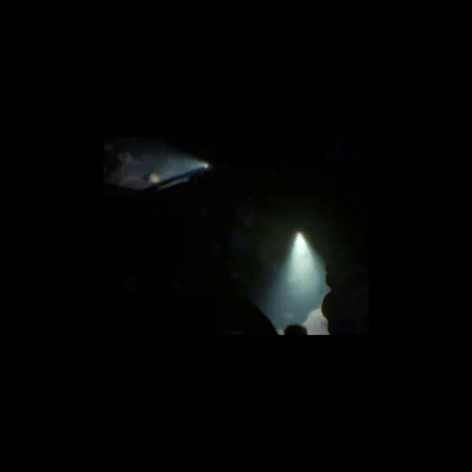
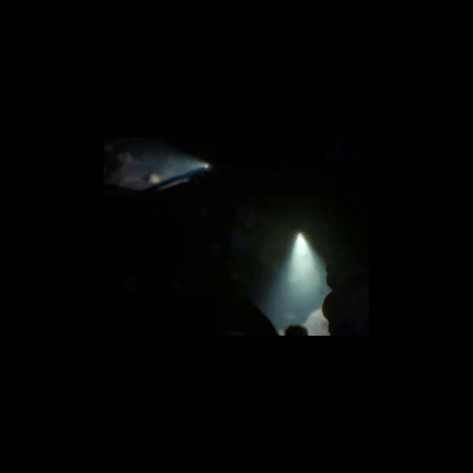

Thomas Johnson
You’ve got a problem. I’ve got solutions.
My name is Thomas Johnson. With over 11 years programming, it's safe to say it is my passion. I enjoy a challenge, and love to apply my creative thinking to solve problems in a smart and efficient way. I've used multiple languages, with my strongest being C++, C and Python. With my vast knowledge of algorithms, data structures and design patterns, there's almost nothing I cannot solve. Feel free to checkout out the various projects I have worked on below.
Projects
Please note, this website is very much under development. Some project pages may still be in development.
BlitzBox
In Blitzbox, play against ai or other players and be the best gravity defying laser shooter inside the box.
This was a team project made by 8 of us at Newcastle University. It took us 9 weeks to make. I was responsible for the networking, and a few other areas of the game.
 

Dreaded Deep
A game made for the NUGDS (Newcastle University Game Dev Society) Game Jam. Explore the dark cave and retrieve all the artefacts to win! But be careful, a hungry shark prowls these waters.
This project was made in unreal for a 2 week game jam.
Dissertation Project
This project researched the performance impact of procedural terrain generation on the CPU vs on the GPU. It was the first program in which I used C++, OpenGL and compute shaders. It implemented the marching cubes algorithm to draw the terrain, and generated noise using perlin noise and value noise functions. A custom weight function was made to smooth the noise.
This was my 3rd year dissertation project for my university degree which took 12 weeks long. It included researching, writing the project and a final write up.


Game of Life Pattern Recognition
A scalable program that finds patterns in Conway's 'Game of Life'. The world and patterns are represented as a graph which allows for fast pattern recognition and optimised world updates.
This project was written in C++ in 2 weeks for a university coursework.
Space Graphics
A program that draws a planet and a sun with various post processing and lighting effects. Planets are made from cube maps with layered textures. Post processing (blurs, bloom, black+white filter) effects can be layered.
This project was written in C++ and OpenGL in 3 weeks for a university coursework.


Little Feline Big Deadline.
A game in which you collect cats within a certain amount of time and record a high score, while an AI hunts you down and also steals cats. Major feature is OBB collisions, implementing Separating Axis Theorem, Plane Intersection and Cohen–Sutherland Clipping Algorithm for accurate collision resolution.
This project was written in C++ in 2 weeks for a university coursework.
Evolutionary Algorithms
This program recreates images from polygons utilising a genetic algorithm. The GIF to the right is a 97% match and took 7 hours to compute!
This project was written in Python for a university coursework.


Bubble Pop
Pop the bubbles as fast as you can to score the highest! Try not to make mistakes, as mistakes reset your score multiplier and reduces your score.
This game was written in C++ using SFML for the 2025 Global Game Jam. It was made in 48 hours.
Langtons Ant
A simple python program that runs a langtons ant algorithm. Was written using Python and pygame.
This project was written in Python for fun in about 2 hours.

Minesweeper
Inspired by the classic game minesweeper! This project was written in python to recreate the game of minesweeper. It was a short term project to do for fun as something different to what I typically made at the time (Game of Life and Snake games).
This project was written in Python using Pygame.